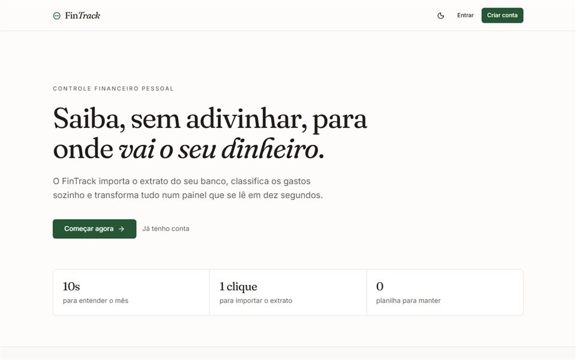
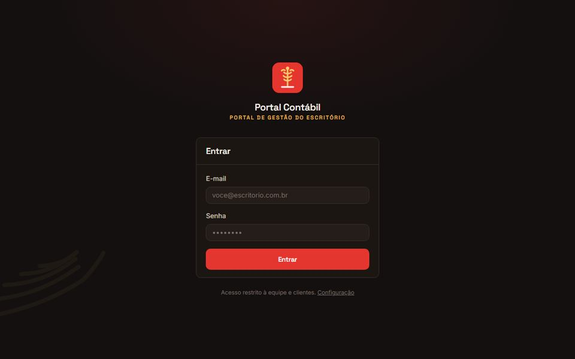
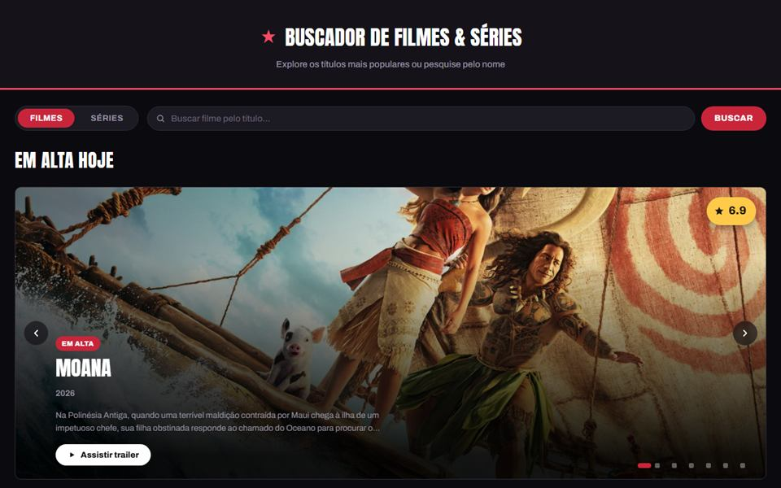

Olá, eu sou
João
Pedro
Brocuá
> _
Curioso por dados, tecnologia e organização. Atuo na parte operacional de certificação digital, com emissão de Certificados Digitais ICP-Brasil, gestão de documentos e segurança da informação, unindo isso ao meu interesse por programação e análise de dados.
 Disponível p/ oportunidades
Disponível p/ oportunidades
01
Quem eu sou
Sou estudante de Sistemas da Informação com interesse especial por análise de dados, desenvolvimento web e automação de processos.
Atuo na área operacional de certificação digital, cuidando da emissão de certificados, da gestão e organização de documentos e da segurança e proteção de dados dos clientes. Gosto de aprender coisas novas, trabalhar em equipe e entregar meu trabalho com organização e pontualidade.
Como eu trabalho
Trabalho em equipe
Organização
Pontualidade
Proatividade
Disposição para aprender
3+
Experiência
anos entre rotinas administrativas e certificação digital
UFR
Graduação
Sistemas de Informação · 2023 — 2027
Especialidade
ICP-Brasil
certificação digital e segurança da informação
02
O que eu sei fazer
Tecnologias
TypeScriptapps fullstack
React & Next.jsinterfaces e aplicações web
Pythonanálise de dados
SQLconsultas e modelagem
Pandasmanipulação de dados
HTML & CSSinterfaces
Ferramentas
Idiomas
PortuguêsNativo
InglêsBásico / Intermediário
03
Repositórios fixados

portal-contabil
Em produçãoSistema de gestão para escritório de contabilidade: clientes, empresas, tarefas, processos, prazos fiscais e documentos. Em uso real, na versão self-hosted, no escritório Carvalho Contabilidade.
Next.js
Supabase
TypeScript
Tailwind CSS
TypeScript

04
Trajetória profissional
2023 — Atual
Agente de Registro
Facilita Certificadora Digital · Rondonópolis, MT
- ▚Emissão e validação de certificados digitais (SOLUTI), garantindo conformidade e agilidade no processo.
- ▚Atendimento presencial a clientes, esclarecendo dúvidas sobre certificação digital e documentação necessária.
- ▚Conferência e organização de documentos, assegurando precisão antes da emissão dos certificados.
05
Educação
Bacharelado em Sistemas de Informação
2023 — 2027 · em andamentoUniversidade Federal de Rondonópolis (UFR)
Graduação em andamento, com foco em desenvolvimento de software, banco de dados, análise de dados e engenharia de sistemas.
OUT 2025
Git e GitHub — Mapeando o versionamento de código
IntegraTech - UFR · Rondonópolis, MT
JUL 2024
NLW Journey — Fullstack
Rocketseat · Online
AGO — DEZ 2024
Inglês Básico
Celig - Centro de Línguas · Rondonópolis, MT
2022 — 2024
Inglês Básico ao Intermediário
KNN Idiomas · Rondonópolis, MT
AGO 2020
Operador de Computador (FIC)
Escola Técnica Estadual Novos Caminhos · Rondonópolis, MT
06 · Contato
Vamos
conversar?
Estou aberto a oportunidades, projetos e trocas de ideia. Me chama por qualquer um dos canais abaixo.